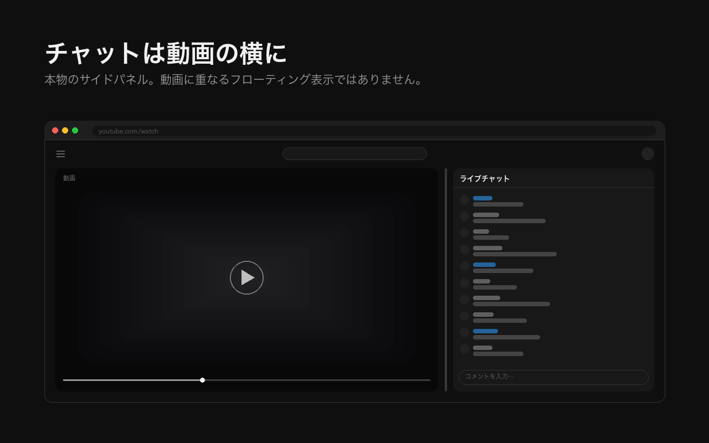
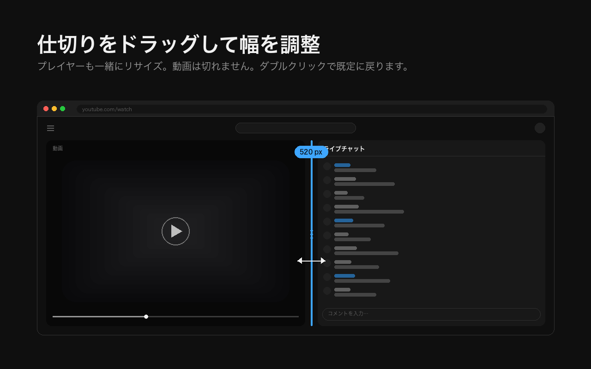
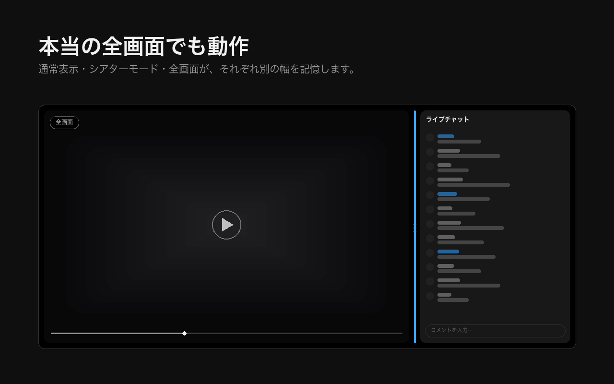
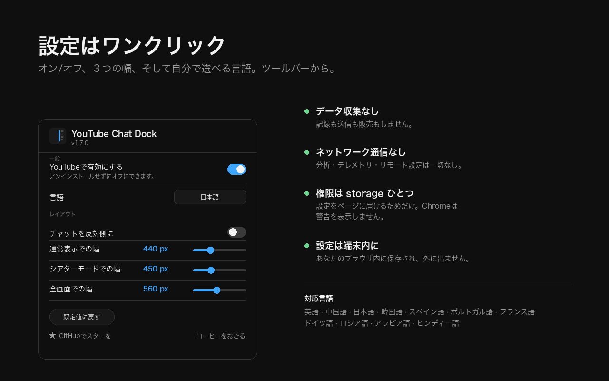

YouTube Chat Dock
チャットは動画の横に。上にかぶせない。
YouTubeのライブチャットとチャットのリプレイを、幅を変えられるサイドパネルにする無料・オープンソースのChrome拡張機能です。通常表示・シアターモード・本当の全画面のすべてで動作します。プレイヤー自体がチャットの横に収まるようリサイズされるため、チャットが動画を覆うことも、動画が切れることもありません。

YouTubeのライブチャットを動画の横に並べるには？
ドッキングさせる拡張機能を入れてください。YouTube側には、チャットの幅も位置も変える手段がありません。3つの表示モードのどれにも、チャットパネルをリサイズしたり移動したりする設定は存在しません。
YouTube Chat Dockは、すでにページにあるチャットのレイアウトを組み替えるだけです。ですからチャットはYouTube純正のまま、スーパーチャットもスタンプもモデレーション機能もメンバーバッジもそのまま動きます。作り直しても、経由させてもいません。変わるのは、チャットがどこに置かれ、どれだけの幅を持つかだけです。
YouTubeのライブチャットの幅は変えられる？
はい、動画とチャットのあいだの仕切りをドラッグします。通常表示・シアターモード・全画面はそれぞれ別の幅を記憶するので、全画面にしてもレイアウトが崩れません。
- 仕切りをドラッグして、120px以上の好きな幅に。
- 仕切りをダブルクリックすると既定の幅に戻ります。
- 仕切りをフォーカスして矢印キーでも調整できます。Shiftで大きく、HomeとEndで最小・最大へ。
- 仕切りにマウスを重ねて ⇆ を押すと、チャットが反対側へ移動します。選択は保持されます。
- ツールバーの設定パネルのスライダーでも変更でき、ドラッグ中もその場で反映されます。

シアターモードでチャットが動画の下に行くのはなぜ？
シアターモードではYouTubeがプレイヤーを狭めて横に領域を確保し、そのうえでその領域を空のまま残し、チャットを動画の下に表示するためです。これはYouTube側の挙動であって、拡張機能の不具合ではありません。
この拡張機能を有効にした状態と、すべて無効にした状態の両方で実測しましたが、レイアウトは同一でした。プレイヤーの横におよそ450pxの列が確保されたまま使われず、チャットはその下に置かれます。YouTube Chat Dockは、その確保済みの領域を本来入るはずだったチャットで埋め、さらにその確保幅そのものを変えられるようにします。だからプレイヤーの幅とチャットの幅が食い違いません。
全画面でもライブチャットは使える？
使えますが、思いどおりにはなりません。リサイズも位置の指定もできないからです。この拡張機能を入れると、チャットは記憶された幅で動画の横にドッキングされ、何も覆わず、動画も切れません。

過去の配信のチャットリプレイでも使える？
はい。アーカイブのチャットリプレイも、配信中のライブチャットとまったく同じようにドッキングされ、リサイズできます。個別の設定は不要です。
チャットを左側に移せる？
はい。仕切りにマウスを重ねて ⇆ ボタンを押すか、ツールバーの設定パネルで切り替えます。選択は動画をまたいでも保持されます。
アラビア語のような右から左に読む言語では、切り替えはレイアウト全体と一緒に反転します。逆向きになったりしないので、「反対側」は常に見たとおりの意味になります。
設定にはどんな項目がある？
有効化スイッチ、言語選択、左右の切り替え、3つの幅スライダー、そしてリセット。すべてツールバーの設定パネルにあります。ただし開く必要はありません。仕切りだけでスライダーと同じことができ、矢印キーでも幅を変えられます。
| 項目 | 動作 |
|---|---|
| YouTubeで有効にする | アンインストールせずにパネルをオフにします |
| 言語 | ブラウザの言語とは無関係に、12言語から選べます |
| チャットを反対側に | 仕切りの ⇆ ボタンと同じです |
| 3つの幅スライダー | 通常表示・シアターモード・全画面。ドラッグ中もその場で反映されます |
| 既定値に戻す | すべて元に戻します |

YouTube Chat Dockはデータを収集する？
いいえ。収集も送信も一切なく、ネットワーク通信そのものを行いません。分析も、テレメトリも、リモート設定もありません。設定はあなたのブラウザ内に保存され、端末から出ることはありません。
- データの収集・送信・販売を一切しません（匿名化も集計もしません）
- ネットワーク通信なし、分析なし、テレメトリなし
- バックグラウンドで動くService Workerなし。YouTube以外では何も動きません
- アカウント不要、ログイン不要、クラウド同期なし
- ホスト権限なし。
youtube.com以外では動作できません - 権限は
storageひとつだけ。Chromeはインストール時に何の警告も出しません
storage権限がある理由はひとつだけです。設定パネルは独立した拡張機能ページなので、それ以外の方法では設定対象のタブに設定を届けられないからです。詳細：store/PRIVACY.md。拡張機能全体はCSS 1枚と小さなスクリプト1本、MITライセンスで、10分ほどで最初から最後まで読み通せます。
Edge・Brave・Opera・Arcでも動く？
はい。依存関係のないManifest V3拡張機能で、Chrome 88以降とChromium系ブラウザ（Edge、Brave、Opera、Vivaldi、Arc）で動作します。
Chromeウェブストアで公開しており、Edgeをはじめ他のChromium系ブラウザからも直接インストールできます。Firefoxアドオンではありません。
対応している言語は？
12言語です。English、繁體中文、简体中文、日本語、한국어、Español、Português、Français、Deutsch、Русский、العربية、हिन्दी。
言語の選択はブラウザの言語とは独立しています。Chromeを別の言語にしたまま、この拡張機能だけ日本語にできます。右から左に読む言語のレイアウトも、たまたま反転するのではなく、きちんと処理しています。
できないことはある？
2つあります。ブラウザ幅が1000px未満のときは意図的に何もしないこと、そしてyoutube.comのサイトデータを消すと保存した幅がリセットされることです。
- ウィンドウ幅が1000px未満のとき。YouTubeは1カラムのレイアウトに切り替わり、チャットを動画の下に置きます。この拡張機能は、YouTube自身のレスポンシブなレイアウトと争わず、あえて何もしません。
- サイトデータを消すと幅がリセットされます。幅は
localStorageに保存しています。ページが描画される前に適用するためで、これが読み込みのたびにレイアウトがちらつくのを防いでいます。
インストール方法は？
Chromeウェブストアからワンクリックで追加し、開いているYouTubeのタブを再読み込みするだけです。サイドパネルにするための設定は必要ありません。
ウェブストアから
Chromeに追加して、YouTubeのタブを再読み込みするだけ。Chromeは何の許可も求めません。
ソースから
リポジトリをクローンし、chrome://extensions/を開いてデベロッパーモードをオンにし、「パッケージ化されていない拡張機能を読み込む」でフォルダを選びます。ビルド不要、依存関係もありません。